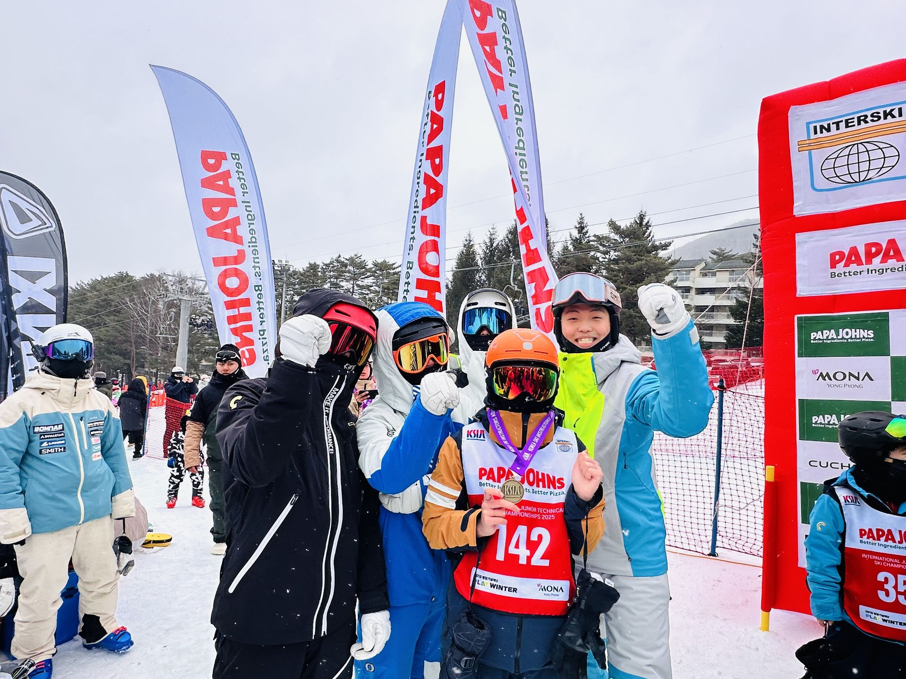
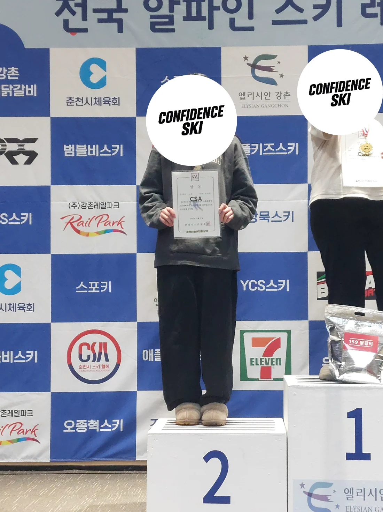
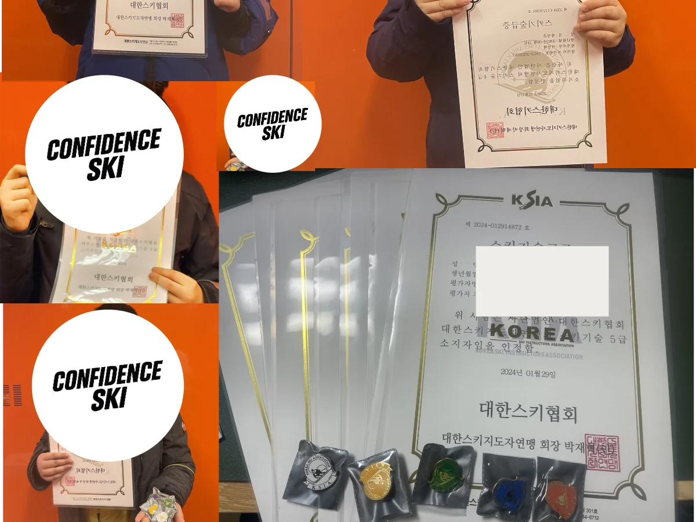

대회와 기술등급제
배운 움직임을 출발선에서.
컨피던스스키의 주니어 대회 참여 기록과 스키 기술등급제 안내를 한곳에서 확인하세요.
대회 경험
연습한 턴을
연습한 턴을
현장에서 확인합니다.
대회는 순위뿐 아니라 출발선에 서고 낯선 설면을 내려오는 경험입니다. 컨피던스스키는 주니어 대회 출전 준비와 현장 지원을 소개합니다. 아이가 배운 움직임을 실제 코스에서 확인한 기록을 살펴보세요.
“해냈다”는 기억을
다음 연습으로.

대회 기록
출전 현장을
출전 현장을
한 장면씩.
아래 항목을 선택해 공개된 대회 기록과 현장 사진을 확인해 보세요.
ALPINE SKI
춘천시스키협회장배
박OO 학생과 허OO 학생이 각각 2위를 기록했습니다. 아이들이 쌓아 온 기술을 대회 코스에서 보여 준 장면입니다.
2025년 국제 주니어 기술선수권대회 참가 기록도 있습니다. 출전 가능한 대회와 준비 방식은 시즌과 아이의 상태에 따라 안내받을 수 있습니다.
주니어 스키 기술등급제
실력의 단계를
실력의 단계를
눈으로 확인하세요.
주니어 스키 기술등급제는 1급부터 10급까지 단계별 기술을 살펴볼 수 있습니다. 원장 이상혁은 주니어 기술등급제 심사위원입니다. 아래 등급을 눌러 기술명을 확인하세요.
01스노우플라우
